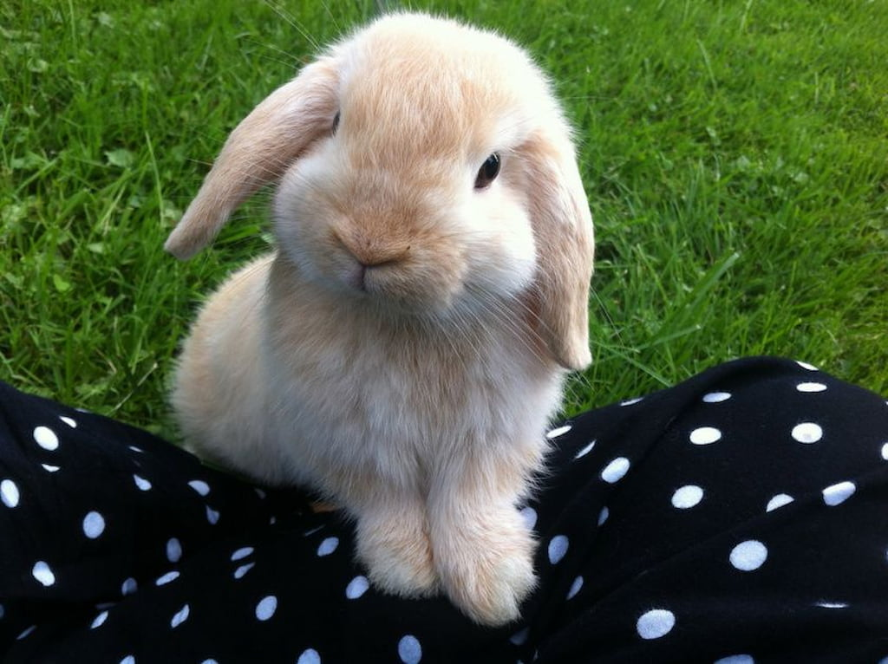
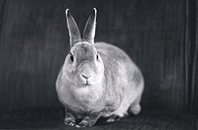
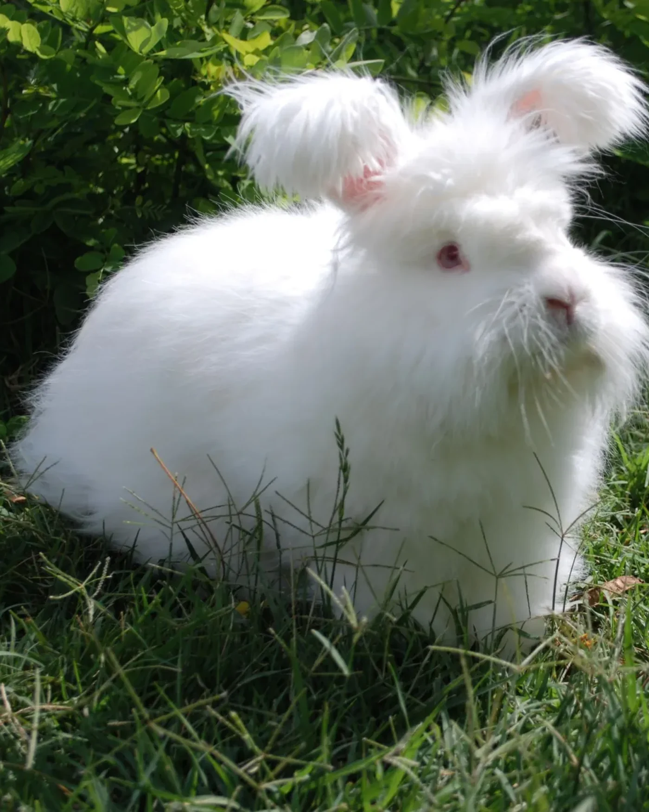
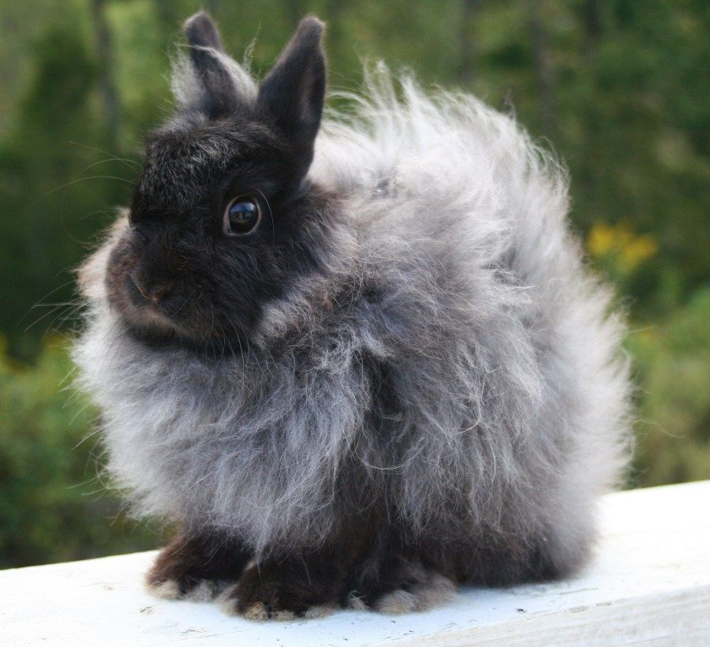
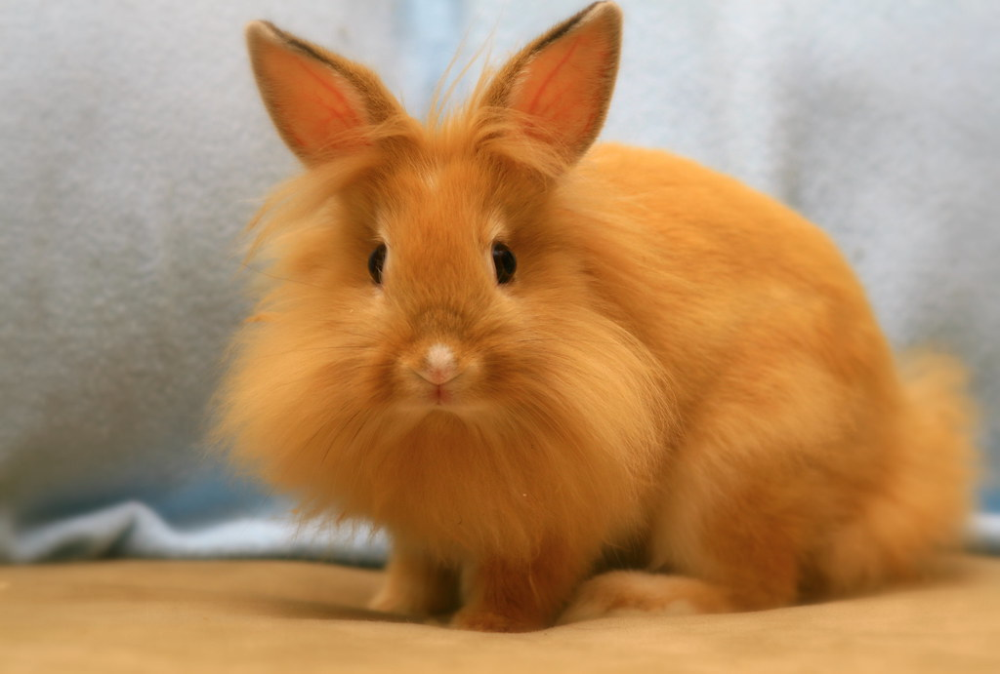
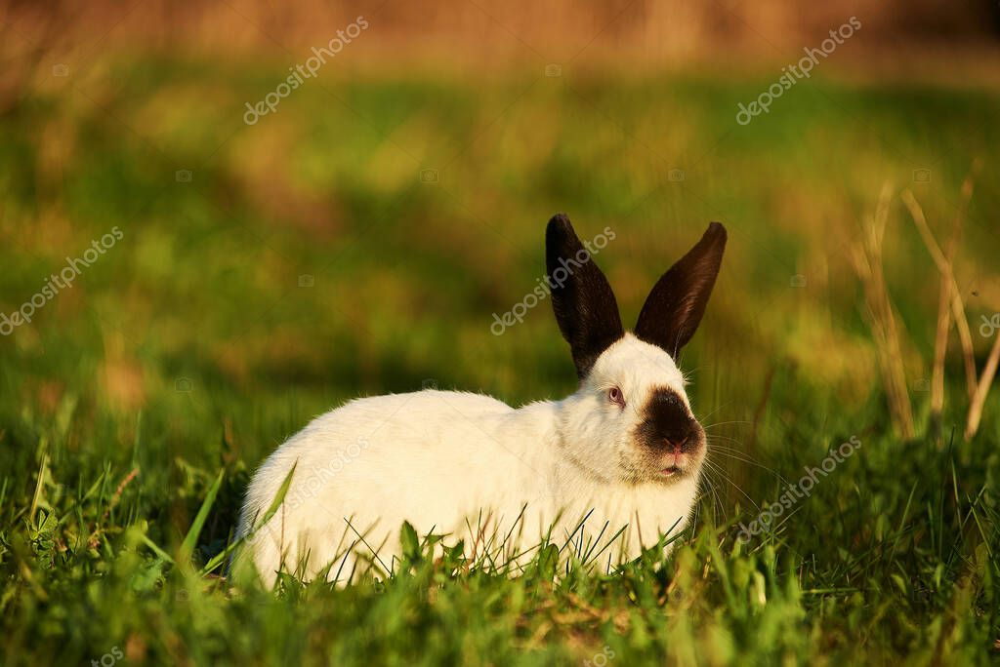
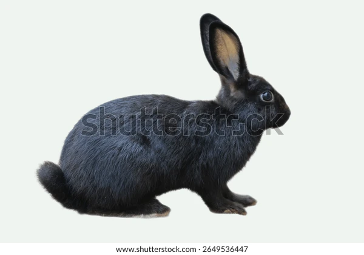

👑 Tavşan Cinsleri Ansiklopedisi
Boyutları, kulak yapıları ve ipeksi kürk özellikleriyle en popüler evcil tavşan ırklarının dünyası.

Hollanda Lop Tavşanı
Boyut: Küçük (Cüce)
Karakter: Uysal, oyuncu, sosyal. Aşağıya doğru sarkan uzun kulakları ve basık yüz hatlarıyla evde bakımı en popüler tavşan ırkıdır.

Hollanda Cüce Tavşanı
Boyut: Çok Küçük (Minyatür)
Karakter: Meraklı, enerjik, biraz ürkek. Dünyanın en küçük tavşan ırklarından biridir. Kulakları kısadır ve hep dik durur.

Mini Rex
Boyut: Küçük
Karakter: Cana yakın, sakin, akıllı. Kadifeyi andıran, pürüzsüz ve dökülmeyen kürk yapısıyla bilinir. Dokunması inanılmaz yumuşaktır.

Ankara Tavşanı (Angora)
Boyut: Orta / Büyük
Karakter: Sakin, uysal, sevdiren. Tüm dünyada "Angora" olarak bilinen, yün gibi uzayan bembeyaz tüylere sahip, çok yoğun tarama ve bakım isteyen asil bir yerli ırktır.

Jersey Wooly
Boyut: Mini Pofuduk
Cüce boyutuyla Angora yününü birleştiren, tüyleri kolayca keçeleşmeyen sevecen bir kucak tavşanıdır.

Aslanbaş (Lionhead)
Boyut: Küçük
Karakter: Sevecen, ilgi seven, zeki. Başının etrafında tıpkı bir aslanın yelesini andıran yoğun ve pofuduk tüyleri vardır. Ev ortamına çok çabuk adapte olur.
.jpg)
Flandre Devi (Flemish Giant)
Boyut: Çok Büyük (Dev)
Karakter: Nazik, aşırı sakin, özgüvenli. Ağırlıkları 10 kilogramı bulabilen dünyanın en büyük tavşanıdır. Köpek gibi evde serbestçe gezmeyi severler.

Kaliforniya Tavşanı
Boyut: Büyük
Gövdesi bembeyazken; kulakları, burnu, kuyruğu ve patileri simsiyah olan çok asil görünüşlü bir dev ırktır.

Yeni Zelanda Tavşanı
Boyut: Büyük
Karakter: Akıllı, uysal, eğitilebilir. Genellikle kırmızı gözleri ve bembeyaz kürkleriyle tanınırlar. Büyük boyutlarına rağmen oldukça sevecen ve uysaldırlar.
🏠 Kendiniz İçin Doğru Irkı Nasıl Seçersiniz?
- 🏢 Apartman ve Alan Kısıtı: Eviniz darsa Hollanda Lop veya Cüce tavşanlar az yer kapladıkları için daha uygundur.
- 🧼 Tüy Bakımına Ayıracağınız Zaman: Ankara Tavşanı ve Aslanbaş gibi uzun tüylü ırklar her gün taranmazsa tüyleri düğüm olur.
- 🧸 Karakter ve Çocuklarla Uyum: Hollanda Lop ve Mini Rex ırkları, minyatür cüce tavşanlara göre çok daha uysaldır ve kendilerini sevdirmeyi severler.
⚠️ Irklar Hakkında Doğru Bilinen Yanlışlar
❌ Yanlış: "Petshoplarda satılan tüm küçük tavşanlar ömür boyu cüce kalır"
Bu en büyük yanılgılardan biridir. Çoğu zaman henüz sütten yeni kesilmiş büyük ırk yavruları "cüce tavşan" diye satılır ve birkaç ay içinde devasa boyutlara ulaşırlar. Gerçek bir cüce ırkın kulakları ve yüz yapısı bebekliğinden itibaren çok farklıdır.
💡 Altın İpucu: Kırmızı Gözler Hastalık Değildir
Yeni Zelanda gibi bazı beyaz ırk tavşanların gözlerinin kırmızı olması bir hastalık veya körlük belirtisi değildir. Bu durum tamamen **Albinizm** ile alakalıdır ve ışığı yansıttığı için gözleri kırmızı görünür; tıpkı diğer tavşanlar gibi mükemmel görürler.